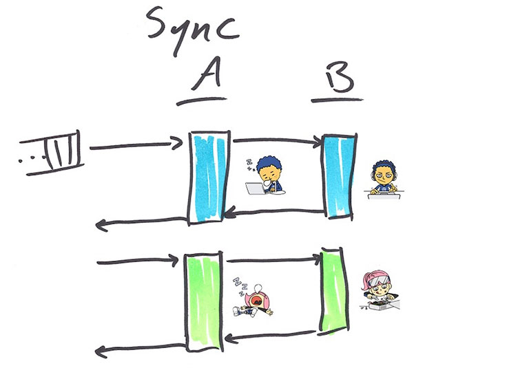
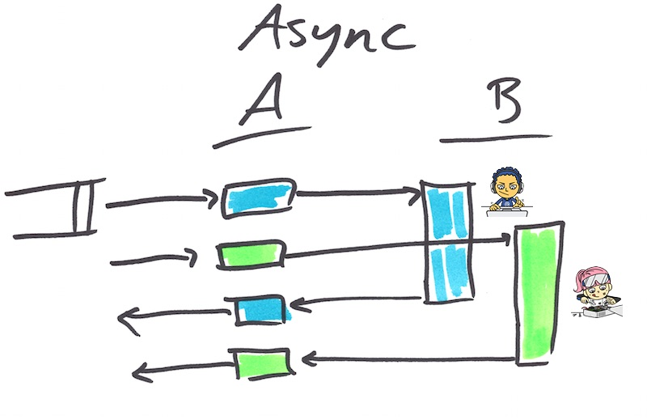

C++-{1, 2}z
C++-{11, 14, 17, 20}
Jonathan Muller / @bhaal22
Motivations
- No updates of the language / standard library since 2003
- Increase type safety by providing safer alternatives to earlier unsafe techniques
- Increase performance and the ability to work directly with hardware
- Implement zero-overhead principle
- Make C++ easy to teach and to learn without removing any utility needed by expert programmers
Motivations: personal thoughts
- make c++ fun again
- try to get back developpers to use this language
- other languages have a shorter lifecycle: javascript, java, c#
- c# is born in 2002 and currently c# 7 is implemented
- try to improve speed of writing c++ code
- since 2011, language / standard library improves every 3 years
Core language updates
- compile time improvement: extern template
- Initializer lists
- type inference: auto keyword and decltype
- lambda functions: syntaxic sugar around functors
Core language updates: Class hierarchy
- override keyword: tell compile to look in inheritance tree for a virtual method with the same signature
- final keyword: class definition / method definition
Core language updates: misc
- strongly typed nullptr
- stronglty typed enums
- string literals: u8 (utf-8), u (utf-16), U (utf-32)
- smart pointers: std::unique_ptr, std::shared_ptr, std::weak_ptr
standard library: threading

standard library: threading

standard library: threading
- abstraction initially defined in boost
- std::thread
- std::mutex
- std::condition_variable
standard library: asynchronous
- std::thread : low level asynchronous mechanism
- a task is something a developper wants to be done (e.g. a computation)
- a task uses a thread as support for asynchronous operations
- std::async
Javascript future / promise: chain defers
// Defered chaining
return httpGet(currentModule.fullUrl).then(function (res){
return loadBody(res);
}, currentModule.httpGetError).then(function (webData) {
return envPromise(webData);
}).then(function (window){
return extractData(window);
}, currentModule.envError);
Two Tasks. One process. (I’ll give you something in the Future. I Promise.)
- promise / futur paire = machanism to get data between threads
- assume you have no need for coordination between threads and no shared data
- compute a single function in parallel for two different initial values
- futures = result of an asynchronous result provider
- std::promise, std::packaged_task, and std::async
- implements get_future()
Differences accross the different interfaces: std::async
- std::promise. The most flexible way to provide a value for a future. Computation is performed independently from the promise object and the result is simply passed through the object to the future using the set_value() method.
Differences accross the different interfaces: std::packaged_task
- std::packaged_task. The second most flexible way to provide a value for a future. The constructor takes a function and uses the return value of that function to set the value for the future. Since packaged_tasks must be explicitly invoked, they can be created and then assigned to be run on particular threads.
Differences accross the different interfaces: std::async
- std::async. Provides the least flexibility, but also the simplest way to execute an asynchronous computation. The method takes a function and uses the return value of that function to set the value for the future.
- the primary distinction between std::async and std::packaged_task is that std::async automatically begins execution upon calling it.
- the caller has no control over where the task is scheduled to run (including on the current thread).
Limitations
- Cannot chain futures (std::future::then() / std::future::except())
- Must wait for C++20
- Available in TS experimental package
future f1 = async([]() {return 123;});
future f2 = f1.then([](future f){ return f.get().to_string(); });
future futures[] = {async([]() { return intResult(125); }),
async([]() { return intResult(456); })};
future>> any_f = when_any(begin(futures), end(futures));
future futures[] = {async([]() { return intResult(125); }),
async([]() { return intResult(456); })};
future>> all_f = when_all(begin(futures), end(futures));